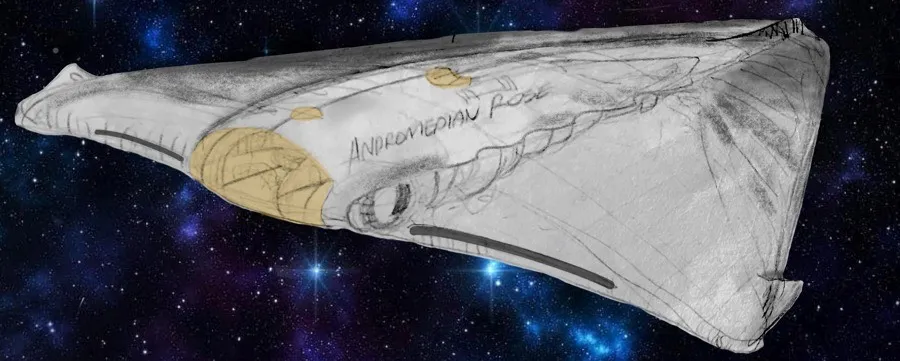
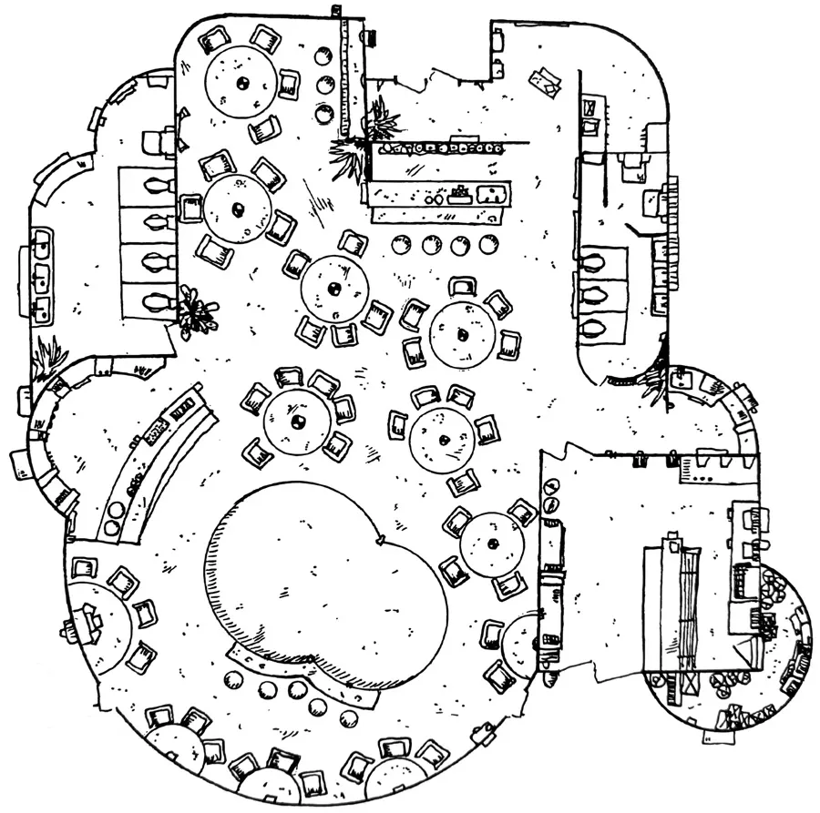
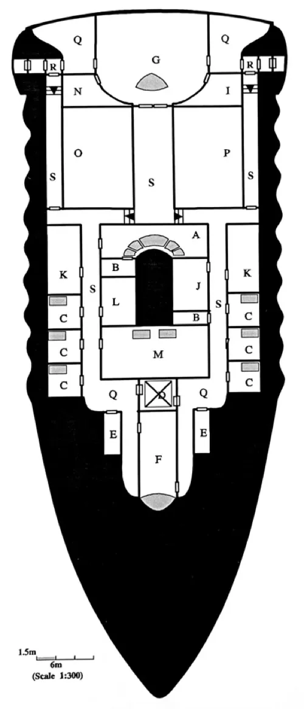
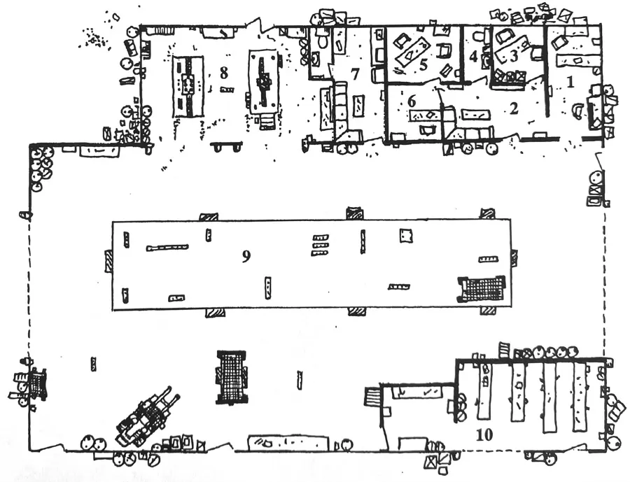

A Genesis Role Playing Game Adventure
Game Master Introduction
Background
The King of the largest kingdoms on the planet of Minarus, Ponteria, Lord P’han Jerado, and the Queen of Fomara, Lady D’prena Manlyne, The second most powerful queendom on the planet, want their children to marry. Princess Agina Jerado and prince Surqri Manlyne by joining would join the two kingdoms together. Both of the children are preparing for the day of the joining with equal anticipation as their parents.
The two kingdoms of the planet of Minarus are seeking the aid in military equipment and forces from the foundation to help them in their struggles against the Corporate Loyalists. They would also like to enter the foundation as a trading planet to gain better prices for the products they produce. Under foundation law any group on the planet may petition for acceptance into the foundation but it must represent the majority of the people on the planet. To achieve this Lord Jerado and Lady Manlyne must allow the rift between their two kingdoms to be bridged by the joining of their two children.

History
Culture: The Minari have many traditions some of which are performed regularly and throughout daily life and others which are only performed a couple times a year and only on special occasions, one of these special traditions is that of the joining which is only performed five times a year and is the only time when two people may marry each other. This tradition began in ancient times and is based on the orbits on the two moons of the planet Minarus. The two moons move in orbits which align five times a year. To observers these ancient lovers become visible as one, for five days and then separate and continue around the planet. During these five days the people of the planet begin a celebration which starts on the morning of the day of conjunction and continues until the morning after the two lovers separate. Two people are joined at the time of closest alignment of the two moons.
The war on Minarus
The planet of Minarus was first set-up in the beginnings of the corporate era. The first 20,000 colonists established the production facilities to mine the resources of the planet. They first colonists were joined by new colonists sent from Corporate Earth. After the fall of the Corporations this planet was cut-off from the rest of the foundation. In the population there are groups which have remained aligned to the Corporation and they seek to take power from the hands of the King and the Queen that were empowered after the fall of the Corporate Era. The Minarií are plagued with corporate loyalists who continually capture shipments of materials and use terrorist tactics
The Plot
In this module the P.C.’s come to the rescue of a beautiful princess. She asks them to help her from being kidnapped and to get her to an orbiting space ship in time for her wedding. The timing of this wedding is very critical to the people of her culture because of it’s coincidence with two of the moons of her home planet ofMinarus.
The planet of Minarus, once a colony of a corporation lost contact with the rest of the foundation when the Corporate era ended. The two largest ruling bodies on the planet are monarchies that were set up just after the fall of the mother corporation. These two governments kept the planet productive and stopped the uprising of the corporate loyalists. The conflict between the loyalists and the two kingdoms has been a continuous draw of the resources of the planet and is has ultimately taken it’s toll. The two kingdoms find themselves devoting more and more of their resources to the fight and less and less to the people - the unrest of the people is growing.
In a effort to finally defeat the loyalists the two kingdoms of the planet are petitioning the Poly Solar Foundation to allow them to become a member. The governments want to become part of the foundation for two reasons. First, the aid that the foundation could provide would certainly give the government a upper hand m defeating the loyalists. Second, the markets of the foundation that would be open to the industry on the planet would help the recovery from the very lengthy war. Under foundation law any organization may petition for entrance into the foundation but they must represent the majority of the people on the planet, to accomplish this the two kingdoms must unite.
The princess approaches the P.C.’s and pleads for their assistance, she does not wish to return to the royal ship because she does not know who to trust. All of her guards could be loyalists. The joining is scheduled diiled for 4:15 pm two days from the first meeting of the P.C.’s Once the P.C.’s agree to help she will take them to a hotel. At the hotel there will be a kidnapping attempt. There will be several attempts to kidnap the princess. After the first unsuccessful attempt the princess will suggest that your party move to a safer refuge.
The Andromedian Rose is the intended wedding gift from the King to his daughter. The A. Rose is docked m one of the bays surrounding dmg the Quite skyhook. Once in the A. Rose the princess will ask that the P.C.’s find her kidnappers. From the clue left in the pocket of one of the kidnappers the P.C.’s will be lead to the bar there will be an additional attempt and the P.C.’s will see the news broadcast of their kidnapping of the princess. The King offers 100,000 dits for the safe return of the princess before the joining. The P.C.’s and the princess bid a hasty retreat from the various reward seeking patrons of the bar and go back to the A. Rose. At the Ship the princess’s companion offers a suggestion. The droid analyzed the tape of the security camera footage and points the P.C’s to the warehouse as a possible origin.
Upon investigation the warehouse the P.C’s are surprised and captured. The princess, her companion, and the P.C.’s are taken through the warehouse to an office where they are locked up. The princess noticed the various carton of goods in the warehouse and saw the leader of the loyalists examining goods for shipment. The princess has a revelation, the loyalists have not been kidnapped her, it must be the arms dealer. The arms dealer does not want the two kingdoms to enter the foundation so that he can continue to sell arms to both the loyalists and the two kingdoms of Minarus.
Pacing
If at any time the module lags or is slow add ping her, it must be the arms dealer. The arms dealer does another kidnapping attempt to get the players moving, or add additional clues that are either questioned out of the thugs that are kidnapping her or from article found on their person.
For example: The thugs use the same weapons as the her government. A match book from the bar.
The events detailed above only the most logical order of the various event in the module. If the players deviate for these events you can re-route them. This can be done by having the princess’s droid offer any information the P.C.’s are missing to point them in the right direction.
N.P.C. Statistics
Use the Random NPC Generation rules.
The Module
This module starts with the P.C.’s on the lower level of the Quite sky-hook. Each is waiting for a tube car into town. In the same area a very beautiful lady m flowing golden gown accompanied by two very large and ornately dressed body guards. The tube car comes and the P.C.’i enter. Just at the last second the lady breaks away from her accompaniment and jumps into the tube-car.
Quito Skyhook
You are m the Quito Skyhook. The Quito skyhook located in Ecuador was the first of its kind to be build during the Corporate era. The three that were built were used as an economical method of transporting cargo and people from earth to outer space and vice versa. The first three skyhooks built are still in service and are still serving the purpose they were built for. As you look around you can see several members of various alien races not uncommon m the foundation. Off to one side of the waiting area there is a beautiful woman who is accompanied by two very large and burly body guards. Beside the woman is a personal companion droid, a comfort reserved for the rich and powerful. After a brief delay the tube car comes and you get up and enter it. The car will take you to the city that surrounds the skyhook. The door begins to close and at the last minute the woman and her droid sprint towards the car and plunge through the narrow opening ng, the two huge guards grab the door and try to prevent it from closing. Their attempts are unsuccessful and the door to the car closes and the depressurize sequence is started (tube cars travel in a vacuum). The guards can be heard over the hiss of depressurization, pounding at the door. After a moment the noise becomes faint and soon totally absent. The hissing mg of the door stops and only a low whine and the pulse of the magnetic drive can be heard. The woman is lying mg on the floor, motionless, covering her ears.
The woman will remain motionless for several seconds. After a time she will sit up and begin to answer questions. She introduces her self as the princess Agina Jerado of the planet of Minams. She will explain to the P.C’s that she was being kidnapped pped by the two guards who are Corporate loyalists. She will tell of the joining with Prince Surqrl Manlyne and the ceremony and the importance of the timing. She explains that it is important not to miss the time of the joining or the two kingdoms on her planet will not be united and they will not be allowed to enter the foundation. She makes a plea to the P.C.’s to help her. She asks that you protect her form being kidnapped and ensure that she gets to the joining at the appointed time to be joined. The joining is set for 4:15 pm. two days from now. She fears that if she returns to the royal ship she would be captured again. She does not know who of her guard to tmst. If the P.C.’s agree to help the princess she will instruct the tube car to go to a hotel m the city.
The Tube Car
The car itself is 5 meters in length and 2.5 meters in diameter. The outside of the car is black and highly polished and the general shape is that of a bullet. Large windows fit the compound curves of the exterior and blend into the metal of the car at imperceptible seams. The windows are tinted and the whole car is dark glossy and sleek. Inside, the car is clean functional and comfortable. There are two bench seats facing one another. In the centre of the far wall there is a recessed control panel which allows the user to control various climatic settings of the car as well as the entertainment functions of the car. Above the control panel is a terminal which gives the passengers access to any one of the many computer networks on Earth. The payment for the car will be deducted from the passengers dit discs, (the fare is 5 dits)
Outside it is dark, what little scenery can be seen reveals the trip down the mountain on which the skyhook is built. As the tube car enters the town is passes through some very seedy parts of town and it comes to rest just outside a modest hotel.
The Hotel & Room
The Front Desk: The front entrance is rather dark and dirty. The stores that flank the hotel are closed, the metal shutters rolled down and covered by graffiti. Above the entrance to the hotel there is a large neon sign displaying the name of the hotel in various languages - some of the letters are not working but the name “The MAJESTIC” is still readable. The exterior doors open onto a small foyer also covered in graffiti. These new themes in decorating cover and obscure the older and more conservatives ones which proceeded them. There is a wall mounted terminal at the back of the room which will greet anyone entering the room and along the side of the room are the doors to several elevators.
The elevators doors will remain locked until the players check-in m the normal manner. If significant efforts are made to force the doors the terminal will notify local police and stall until they arrive.
The terminal will allow check-in by assigning the players a room number after asking various questions. These personal questions will not be necessary if a dit disk is used for check-in and payment. Once checked-in an elevator will open to take them to the appropriate floor and guide them in their room. Any one that checks-in with the players wiU be aUowed access to the room based on a visual identification. Individuals who want to enter the hotel and proceed to the player’s room will have to state the name of a registered guest.
The Room: The players will find rather dimly and dark room fully worth the 10 dits but by no means worth more than 10 dits. The bed is hard, old and smells of the commercial cleaners that are used to clean the covers. The walls are stained and dingy from the years of use from the last painting. The bathroom is small and the tiles that surround the tub and shower are cracked and patched. Overall this room, and the hotel as a whole, suffers from ‘patch-itis’, where the current owner has just patched a problem. This ‘solution’ is now to the point where there are patches on top of patches and the next logical step would be to set fire to the entire building and take the insurance money.
There will an kidnapping attempt on the princess and the players will be forced to repel the attack and save the princess or fail and have the princess captured.
If the player succeed and repel the attack they can go on looking for dues as to who might want to kidnap the Princess.
If the princess is captured there should be some indication, scrap of evidence, that links the attackers to the bar so that the players will follow. A match book,a drink napkin, stir stick, or just anything that wUl lead the players to the bar.
Either way the players should be directed t where they will face their next challenge.
The Bar

The entrance of the bar, two large swinging doors surrounded by narrow glass windows, is set back off the street three meters. A large man stands in the large doorway, obviously the bouncer - and a very good one judging by his size, checks the patrons identification and m times of disagreements ‘escorts’ unruly guests off the premises.
The overhang provides shelter for the entrance and harbours security sensors that will detect and asses the risk of the patrons passing through. The sensor, able to detect a veritable library of information every time a patron walks through, can distinguish a fake bomb from a genuine explosive device. Its sensing ability also encompasses more discrete situations like a loaded from an unloaded gun and weapons of unknown design and function that exhibit only slight resemblances to known weapons. The response of the sensor to the various risks will vary with implied danger posed by the patron, which will range from an audible beep to sirens and alert lights.
If any of the players enter wit weapons the huge bouncer will insist that the weapons are checked at the door.
Just inside the doors there is a coat check desk and a courtesy podium where there is an automated coatcheck service and a staff person to greet customers. Public VidPhones are positioned along the wall.
One of the VidPhones is out of order and the other will invariably be in use, with only short breaks when fights break-out.
Standing in the lobby of the bar very loud music will be heard thumping and pounding continuously, stimulating the patrons to dance and drink. The main bar, serving many local drinks and a few imported beverages, is set against the wall to the right just as you enter the bar. Tables and chairs are scattered around the dance floor and along the far wall for more private conversations.
When the players enter the bar there will be little notice taken of them and this is how the response will be until the video news flash. The announcement will flash over the main 3-D video screen in the bar and all the bar the bar patrons will watch intently.
In the announcement a news caster will describe the situation of the princess’s kidnapping and show security camera footage of the individuals that kidnapped the princess. The footage will have digitally altered to show the player characters kidnapping the princess and taking her into the tube car.
During the clip several of the patrons will notice that the players shown on the tape are actually in the bar, but this will be only of passing interest until the King P’han Jerado comes on and offers 100,000 dits for the heads of the kidnappers and his daughter’s safe return. At this point the three patrons that noticed the PCs will immediately move toward the PCs and attack. The other patrons will also move to subdue the PC
The PCs will have to fend off all the attacks and protect the princess.
If they fail and the Princess will be captured and taken to the warehouse. The PCs wiU then be informed by the droid that she is being held at the warehouse and the fact of the altered tape as proof of this conclusion.
If they succeed the princess will recommend that they go to the Andromedian Rose. When they analyze the tape (the companion droid was recording) the information regarding manipulation of the facts and events m the skyhook was the result of digital manipulation. Upon analysis of the video footage will yield the source of the tape as the warehouse. If the players don’t pursue This information will be should result m the players
The Andromedian Rose

A: MASTER BED. This room is much larger than the other cabins, located across from the door is a large sonic bed. On the wall to the left of the door there is a dressing table and a clothes closet. Across the room from the dressing table are two sonic chairs and a adjustable height table extending from the floor. The five large portals in the roof give an excellent view of the stars outside. On the wall closest to the door and just beside the chairs there is a door which leads in to the master bath.
B: BATH. All the amenities are include in these rooms, including a sonic shower and a toilet (adaptable to all races of the foundation).
C: CABINS. Each of these rooms are essentially the same. There is one sonic bed off to one side of the room, and off to the other side of the room is a large space port in the floor. There is a clothes closet in one corner of the room and a dressing table next to it. Each room is well appointed and very luxurious.
D: THE MAIN AIRLOCK. This is a small room three by three meters. One pressure door is directly in front and to the side of you. The room is clean and well lit. on the wall beside the door in a simple numeric keypad.
E: CLOSETS. These dual room on both sides of the ship contain various cleaning supplies and a service droid.
F: ENTERTAINMENT ROOM. There are two doors to this room one on either of the long walls. A large VidSphere with multiple sonic chairs, couches, and accompanying tables, of adjustable height, are located towards the bow of the ship. There are a number of games m this room, Including holographic chess and a computer cerebral feed system, with which a passenger can experience far off worlds which have been explored or play a game in a totally imaginary world by simply placing a head set on and lying back in the chair. At the aft of this room there are a large assortment of sonic pillows clustered around an enormous 3 meter dome which looks out upon the whole of space.
G: BRIDGE. Six doors lead from this room. The first are two double doors which are at the very back of this room. The second and third set are located beside each other on both sides of the bridge. On the walls between the sets of doors there are various instruments and controls with sonic chairs in front of them. Almost directly underneath the large dome in the roof are three chairs arranged in a crescent facing toward the mam view port. The two outermost chairs have control panels beside them and the central chair none.
H: OBSERVATION DECK. This room, actually an extension of the bridge, consists of a large sonic sofa and a number of smaller sonic chairs. Of all of the rooms on this ship this one gives the best view. In front of the sofa is a large table which is extendible up from the floor to various heights.
I: COMPUTER BANKS. This small room is jammed full of computer hardware. There are several banks of computers and a terminal which provides direct access to the system.
J: GALLEY. In this room are a number of food preparation devices including a hand held microwave, an electromagnetic hot plate, and a sonic food processor. This room also has seating for eight.
K: STORES. These two room are the ships’ stores.
Both of them contain food, bed linens, medical stores, smaU equipment such as a communication packs. Also the ships weapons are kept here, they include.
- 9-Batts
- 3 - Laser pistols
- 2 - Mazer pistols
- 3 - Bio-sensing Sphere guns stationary
L: SICK BAY. In this room there is one examination bed and various closets, along with a hand basin. The closets contain medical supplies, first-aid treatments, and bandages. It is intended only for temporary use and would prove insufficient for longer stays.
M: THE FITNESS ROOM. In this seventeen by seven room along the wall right of the door there are a couple exercise machines and a automated massage table. The wall that the door is m is mirrored and across fro it there are a number of lockers. The lockers contain various types of small fitness equipment and mats. In the ceiling there are two large meter long portals clustered toward the centre of the room.
N: WARP CONTROL. This room is another which is jammed packed with computer equipment. Amongst the banks of computers there is a large control panel and couple of sonic chairs in front of it. One of the banks of computers looks dissimilar to the rest, it is totally black with red lettering emblazoned upon it are the logo-mark of the designers ‘Pandarin sub-system Corp’.
O: GARDEN. It obvious from first sight that this is a converted cargo bay. One level above the door along the inside wall there are two, floor to roof, windows. The walls, floor and ceiling of this room have been painted white which makes this room very bright. In addition there are several long and very bright lights mounted above the windows. These lights provide an equivalent brightness to a clear day with freshly fallen snow on the planet Earth. Along the floor of this room against the slop of the floor there are several rows of plants growing in hydroponic culture. The rows have a large number of plants including ornamental, flowering, and fruiting varieties.
P: CARGO BAY. This large room has a slopping floor, just like the rest of the rooms on the outer edge of the ship. When full this room could hold three small vehicles, which could serve as transport when the ship is planet bound. Currently it is empty.
Q: THE FOYER. There are four foyers m this ship one on either side of the main airlock and another two between the bridge and the main entrances over the wings. These areas are used as a reception area for guests and dignitaries that are coming a board. The aft two foyers are only slightly larger than the airlock. From either of the’ ‘aft foyers a corridor and a hall extend towards the bow and the stem of the ship. The two bow foyers are large and pleasantly appointed with the finest of decor. Each looks out the main port-hole, forward and in either there is space for greeting the guests. In the rounded area which is off to one side there is a full bar. Scattered throughout this room there are the silver mats of sonic chairs. Two doors in this room, each directly across from the other.
R: AIRLOCK. These two air locks seal off the ship from the entrances over the wings and the engineering sections held in the wings. When the engines and Delta Warp core are jettisoned the air locks seal and allow the main body of the ship to act as a lifeboat. On the waU the is a couple of switches which activate the airlock pressurization and depressurization cycles.
S: THE HALLWAY. The hallway has multiple doors leading from it and runs along both halves of the aft section of the ship. The hallways of the aft sections join midway along the ship into one central hallway, running from one side to the other. The hallway has a door at both of its ends which lead forward and give access to the cargo level. Also stairs leading up to a landing in the middle of the hall it allow access to the bridge. As you walk along this wide hallway you can see to the left of you that instead of walls the center half are windows looking down upon a garden to the left.
The Warehouse

It will be obvious to the players upon inspection of a few room that this is a converted vehicle and small ship repair shop. It is now being used as a storage location for weapons, by the boss.
1: OFFICE. This small rectangular room has office furniture m it. On the north wall is a desk with a filing cabinet to the one side. The room is divided into two distinct parts by a low table which runs almost the width of the room in a North-South direction. On the west wall of the room is a table which is covered with old magazines. On both sides of this table there are chairs, another its against the north wall. The magazines are of an ancient variety and not of much interest as they mostly contain pictures of old ships. On the other side of this room the desk is old and made of ancient species of wood. It contains only things like bent paper clips and few rubber bands. The filing cabinet is equally as empty and of the same interest as the rest of the room. AU of the chairs m this room look well used. Above the desk and behind the two chairs are two large windows which seem to be covered on the outside by some kind of opaque paint this stops the majority of sunlight from entering the room. There is one door m this room, on the south wall.
2: CUSTOMER WAITING AREA. This is a rectangular room with five doors leading from it. The first and the only one on the east wall is a fairly large door. On the North wall is an door which is smaller that the one on the east wall and it like the door on the south wall and the one in the north-west comer of the room has a window installed in it which extends from almost the top of the door to just above the door handle. The other door on the west wall dose not have a window in it. In this room also has in it, a sofa, a vending machine, and a sink. Along the walls are framed pictures of old spaceships most of which are recognizable as ancient crafts. The vending machine when it was m operation sold an assortment of confectionery To get to the confectionery the machine must be smashed open, several hits with any chair or a one shot from a gun will, if well placed, will achieve this goal. Upon opening the machine a odour of staleness will fill the room. The confections, all of which have now become hard due to time are on the whole inedible.
In this room is a SPHERE gun which is positioned in the south-easterly comer of the room, near the ceiling. It is equipped with heat sensors and it will blast the first warm object entering the room, which fails a (PR) Perception -30 and (AG) Agility check. If the player fails either of the checks the character will be hit. If, however; the player succeeds on both rolls, the the character dodges and the shot hits the wall.
If a player eats some of the confections the character will become sick in 1:10sd hours. Check the ill character’s CON and if the player fails the check nausea will ensue for 1:10sd mm. followed by vomiting for the same period of time. If the player succeeds with the CON or the period of vomiting has ceased then nausea and hot and cold flashes will begin and last for 2:10sd minutes.
3: Office. This room has only one exit and entrance. The room contains office furniture including a desk, a filing cabinet, and a chair. The desk and the filing cabinet are equally empty excluding a few bent paper cUps and one or two unused pens. In the comer of the room are several boxes containing hundreds of sheets paper, each of which indicate repairs and modifications to space craft and seem to be of an accounting nature. The only window in this room beside the on in the door is covered in a green paint from the outside and seems to be used to block the amount of sun which enters the office.
4: Bathroom. This is a human bathroom which contains a toilet and a wash hand basin, above the basin is a mirror and beside the door which you entered there are no other exits or windows. The door unlike the others in the room dose not have a half window for obvious reasons of privacy.
5: Office. This room has only one exit and entrance. The room contains office furniture including a desk, a filing cabinet, and two chairs. The desk and the filing cabinet are equally empty excluding a few bent paper clips and one or two unused pens. The only window in this room beside the on in the door is covered m a green paint from the outside and seems to be used to block the amount of sun which enters the office.
6: Office. This room has two doors one which leads into another office (room 5) and one which leads into a larger rectangular room (room 2). Again a desk, a filing cabinet, and a chair can be seen m the room. The desk and cabinet are both empty except for a few very time yellowed invoices obviously dating back about fifty years. The only two windows in this room are those of the two doors.
7: Mechanic’s coffee area. The two doors in this room are positioned on the east and south walls. There is one large couch which dominates the room. In front of the couch is a badly stained coffee table that is covered deep cigarette bums and scratches. On the north wall stands a refrigerator, a coffee machine, and a sink. Above them are various cupboards. The refrigerator has in various food articles all of which are fresh. In the sink are some randomly stacked bowls which are dirty. The cupboard contains several stacks of plates and eating utensils. On the walls are several pm-ups and between them is evident a thick layer of dirt and grease.
8: Mechanic’s shop. This room has several doors leading from it. The floor has two distinct areas of grating. In the center of each area is a large block of metal which is perforated with several large holes on each face of the block and at innumerable angles. On the west wall are two large metal racks which are filled with various length of sturdy metal rods each of which have the same diameter as the holes on the metal blocks. Among the rods there are straight ones, bent ones, and curved ones.
THESE RODS ARE INSERTED INTO THE BLOCKS AND ARE USED TO HOLD ODDLY SHAPED PIECES OF WORK IN A STABLE POSITION.
Under each of the grated areas is a pit. The entrance to both pits is on the northern most grated area. Underneath the grating in the pit the wall are soaked with oil and grease. the floor doubly so. On the south wall of the first pit there is a small passage which leads to the second pit. Along the walls of this room are several work benches which are extremely marred and battered.
9: Shop floor. This large extends out in front you in all directions. The ceiling is three times as high as the rest of the rooms and near the roof line hydraulic rams. This room has several exits and a large set of stairs running up the second floor on the west wall. In the south-east comer of the room there is a forklift (inoperable).
10: Parts storage. This has no roof and is cluttered with shelves on which are stacked (thrown) parts of all sizes and description m various states of usefulness.